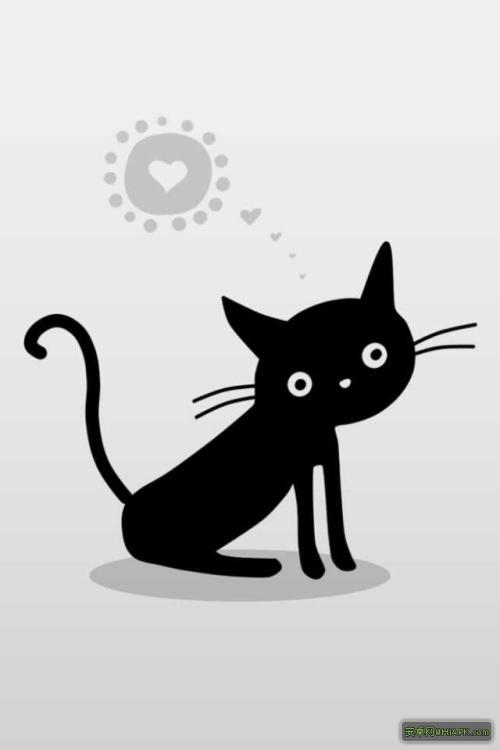

<!DOCTYPE html>
<html>

	<head>
		<meta charset="UTF-8">
		<title></title>
		<meta name="viewport" content="width=device-width, initial-scale=1,maximum-scale=1,user-scalable=no">
		<meta name="apple-mobile-web-app-capable" content="yes">
		<meta name="apple-mobile-web-app-status-bar-style" content="black">

		<link rel="stylesheet" type="text/css" href="../../css/mui.min.css" />
		<link rel="stylesheet" type="text/css" href="../../css/iconfont.css"/>
		<link rel="stylesheet" type="text/css" href="../../css/main.css" />
		<style>
			.article-title {
				font-size: 17px;
				color: #333;
				overflow: hidden;
				display: -webkit-box;
				-webkit-box-orient: vertical;
				-webkit-line-clamp: 2;
				white-space: normal;
				height: 50px;
				line-height: 25px;
			}
			
			.article-title.special{
				height: 25px;
				max-height: 50px;
			}
			
			.mui-table-view .mui-media-object {
				height: 75px;
				max-width: 103px;
			}
			
			.mui-media .mui-media-body p {
				font-size: 11px;
				color: #999;
				margin-top: 4px;
			}
			
			.mui-media .iconfont{
				vertical-align: middle;
			}
			
			.mui-media-body ul.mui-grid-view{
				padding: 0px;
			}
			
			.mui-media-body ul.mui-grid-view:before{
				height: 0px;
			}
			
			.mui-media-body ul.mui-grid-view:after{
				height: 0px;
			}
			
			.mui-media-body ul.mui-grid-view li.mui-table-view{
			    display: inline-block;
			    padding: 10px 0 0 0px;
			    text-align: center;
			    vertical-align: middle;
			    background: 0 0;
			}
			
			.mui-media-body ul.mui-grid-view li:not(:last-child){
				padding-right: 5px;
			}
			
			.mui-media-body ul.mui-grid-view li.mui-table-view:before,
			.mui-media-body ul.mui-grid-view li.mui-table-view:after{
				height: 0px;
			}
			
			.mui-media-body ul.mui-grid-view li.mui-table-view img{
				max-width: 100%;
				width: 100%;
			}
		</style>
	</head>
	<body>
		<div class="mui-content mui-scroll-wrapper" id="articleList">
			<div class="mui-scroll">
				<ul class="mui-table-view" id="articleUl">				
				</ul>
			</div>
		</div>
		<script src="../../vendor/jQuery/jquery.js"></script>
		<script src="../../js/mui.min.js"></script>
		<script src="../../js/vue.min.js"></script>
		<script>
			mui.init({
				pullRefresh: {
					container: '#articleList',
					down: {
						style: 'circle',
						color:'#333', //可选，默认“#2BD009” 下拉刷新控件颜色
					    height:'50px',//可选,默认50px.下拉刷新控件的高度,
					    range:'100px', //可选 默认100px,控件可下拉拖拽的范围
					    offset:'0px', //可选 默认0px,下拉刷新控件的起始位置
						callback: pulldownRefresh
					},
					up: {
						height: 50,
						auto: true,
						contentrefresh: '正在加载...',
						contentnomore: '没有更多数据了',
						callback: pullupRefresh
					}
				},
			});
			var requestUrl = '', webview_detail = null;
			var	titleNView = { //详情页原生导航配置
				backgroundColor: '#3385ff', //导航栏背景色
				titleText: '', //导航栏标题
				titleColor: '#fff', //文字颜色
				type: 'transparent', //透明渐变样式
				autoBackButton: true, //自动绘制返回箭头
				splitLine: { //底部分割线
					color: '#cccccc'
				}
			};
			mui.plusReady(function () {
			    var self = plus.webview.currentWebview();
			    // 或 var self = plus.webview.getWebviewById('new');
			    // 上个页面传的参数 具体怎么用  还不知道
			    requestUrl = self.requestUrl;
			});

			var count = 0;
			var articleList = [
				{title: '山西十所重点高校 你知道几所？', source: '科技头条', publishDateTime: '20分钟前', newFlag: true, hotFlag: false, img: ['../../images/temp.jpg']},
				{title: '山西十所重点高校 你知道几所？', source: '科技头条', publishDateTime: '20分钟前', newFlag: false, hotFlag: false, img: ['../../images/temp.jpg']},
				{
					title: '山西十所重点高校 你知道几所？', source: '科技头条', publishDateTime: '20分钟前', newFlag: false, hotFlag: false,
					img: ['../../images/temp.jpg', '../../images/yuantiao.jpg', '../../images/shuijiao.jpg']
				},
				{title: '山西十所重点高校 你知道几所？', source: '科技头条', publishDateTime: '20分钟前', newFlag: false, hotFlag: true, img: ['../../images/temp.jpg']},
				{
					title: '山西十所重点高校 你知道几所？', source: '科技头条', publishDateTime: '20分钟前', newFlag: false, hotFlag: false, 
					img: ['../../images/yuantiao.jpg']
				},
				{title: '山西十所重点高校 你知道几所？', source: '科技头条', publishDateTime: '20分钟前', newFlag: true, hotFlag: false, img: ['../../images/temp.jpg']},
				{title: '山西十所重点高校 你知道几所？', source: '科技头条', publishDateTime: '20分钟前', newFlag: false, hotFlag: true, img: ['../../images/temp.jpg']},
				{
					title: '山西十所重点高校 你知道几所？', source: '科技头条', publishDateTime: '20分钟前', newFlag: true, hotFlag: false, 
					img: ['../../images/muwu.jpg','../../images/shuijiao.jpg','../../images/yuantiao.jpg']
				},
				{title: '山西十所重点高校 你知道几所？', source: '科技头条', publishDateTime: '20分钟前', newFlag: true, hotFlag: false, img: ['../../images/temp.jpg']},
				{title: '山西十所重点高校 你知道几所？', source: '科技头条', publishDateTime: '20分钟前', newFlag: true, hotFlag: false, img: ['../../images/temp.jpg']}
			];
			function pullupRefresh() {
				//ajax请求数据 就不用写在timeout里了
				setTimeout(function() {
					var table = $('#articleUl');
					var cells = document.body.querySelectorAll('.mui-table-view-cell');
					
					//这里根据实际数据判断是否还有数据 
					if(cells.length >　30){
						//mui('#articleList').pullRefresh().endPullup(true); //参数为true代表没有更多数据了。
					}else{
						//mui('#articleList').pullRefresh().endPullup(false); //参数为true代表没有更多数据了。
					}
					
					var newCount = cells.length > 0 ? 5 : 20; //首次加载20条，满屏
					for(var i = 0; i < articleList.length; i++) {
						var img = articleList[i].img;
						var $li = $('<li class="mui-table-view-cell mui-media"></li>');
						
						//根据图片个数 显示不同的样式列表						
						if( 1 == img.length){
							$li.append('<a javascript:; data-guide="article">' 
											+'' 
											+'<div class="mui-media-body">' 
												+'<div class="article-title">' + articleList[i].title + '</div>' 
												+'<p class="mui-ellipsis">'
													+ '<span class="source">' + articleList[i].source + '</span> &nbsp;&nbsp;'
													+ '<span class="time">' + articleList[i].publishDateTime + '</span></p>'
											+'</div>' 
										+'</a>');
						}else{
							var className = (img.length == 2 || img.length == 4) ? 'mui-col-xs-6' : 'mui-col-xs-4';
							var imgUl = '<ul class="mui-table-view mui-grid-view">';
							for(var j = 0; j < img.length; j++){
								imgUl = imgUl + '<li class="mui-table-view mui-media ' + className + '"></li>';
							}
							imgUl += '</ul>';
							
							$li.append('<a javascript:; data-guide="article">' 
											+'<div class="mui-media-body">' 
												+'<div class="article-title special">' + articleList[i].title + '</div>' 
												+ imgUl
												+'<p class="mui-ellipsis">'
													+ '<span class="source">' + articleList[i].source + '</span> &nbsp;&nbsp;'
													+ '<span class="time">' + articleList[i].publishDateTime + '</span></p>'
											+'</div>' 
										+'</a>');
						}
						
						//此处根据具体的文章性质  判断是否添加 new hot标志。
						if(i == 1){
							$li.find('p.mui-ellipsis').prepend('<span class="mui-icon iconfont icon-new red"></span>&nbsp;&nbsp;');
						}
						if(i == 2){
							$li.find('p.mui-ellipsis').prepend('<span class="mui-icon iconfont icon-hot2 red"></span>&nbsp;&nbsp;');
						}
						
						//有的页面需要 ×按钮  有的不需要 根据参数判断是否显示
//						var self = plus.webview.currentWebview();
						if(1==1){
							$li.find('p.mui-ellipsis').prepend('<span class="mui-icon mui-icon-closeempty mui-pull-right"></span>');
						}
						
						table.append($li);
					}
				}, 1500);
			}

			function addData() {
				var table = document.body.querySelector('#articleUl');
				var cells = document.body.querySelectorAll('.mui-table-view-cell');
				for(var i = cells.length, len = i + 5; i < len; i++) {
					var li = document.createElement('li');
					li.className = 'mui-table-view-cell mui-media';
						li.innerHTML = '<a javascript:; data-guide="article">' 
											+''
											+'<div class="mui-media-body">' 
												+'<div class="article-title">我是下拉刷新的内容' + (i+1) + '</div>'
												+'<p class="mui-ellipsis"><span class="source">科技头条</span> &nbsp;&nbsp; <span class="time">20分钟前</span></p>' 
											+'</div>' 
										+'</a>';
					//下拉刷新，新纪录插到最前面；
					table.insertBefore(li, table.firstChild);
				}
			}
			/**
			 * 下拉刷新具体业务实现
			 */
			function pulldownRefresh() {			
				setTimeout(function() {
					addData();
					mui('#articleList').pullRefresh().endPulldown();
				}, 1500);
			}
			
			/**
			 * 打开新闻详情
			 * 
			 * @param {String} guid 新闻ID
			 * @param {String} title  新闻标题
			 */
					
			function open_detail(guid, title, source, time) {				
				mui.openWindow({
					url: 'articleDetail.html',
					id: 'articleDetail',
					waiting: {
						autoShow: true,
						title: '正在加载...'
					},
					extras:{
				        title: title,  //扩展参数
				        guid: guid,
				        source:　source,
				        time: time
				    }
				});								
			}
			
			$(document).on('tap', '.mui-table-view li a', function(){
				var _this = $(this);
				var guid = _this.attr('data-guid');			
				var title = _this.find('.article-title').text().trim();
				var source = _this.find('.source').text().trim();
				var time = _this.find('.time').text().trim();
				open_detail(guid, title, source, time);
			});

		</script>
	</body>

</html>